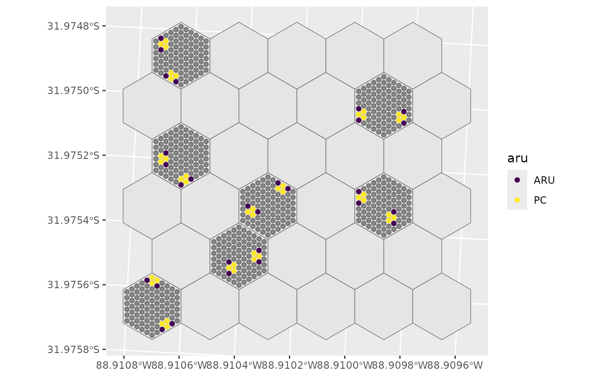
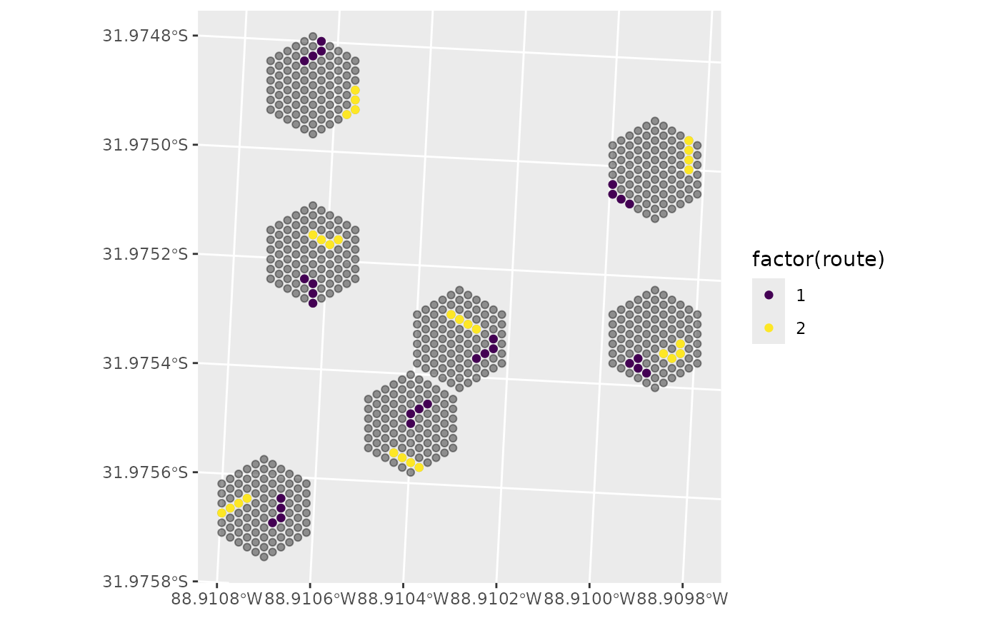

Selection methods for processing site selection using GRTS, random sampling, clustering, or shortest path methods.
Usage
select_sites(
sites,
type,
n_samples,
min_dist,
cluster_size = NULL,
min_dist_cluster = NULL,
os = NULL,
hex_id = hex_id,
site_id = site_id,
ARUonly = FALSE,
useGRTS = TRUE,
progress = TRUE,
seed = NULL
)Arguments
- sites
Spatial Data frame. Site points created in
create_sites(). Requires columns identifying the Hex ID as well as the Site ID (seehex_idandsite_idrespectively).- type
String. Method to select sites. Must be one of
"cluster" - Clustered sampling. Sample a single point, then
cluster_sizesamples around that point."path" - Shortest Path sampling. Sample a single point, then
cluster_sizesamples in a path from that point."Random" - Random sampling. Sample a random set of points.
- n_samples
Numeric. Number of samples to draw for each hex.
- min_dist
Numeric. Minimum distance between points, or if Clusters, between cluster centres.
- cluster_size
Integer. For Clusters, number of points per cluster. For Shortest Paths, number of points per path. Only applies to Clusters and Paths.
- min_dist_cluster
Numeric. Minimum distance between ARU samples within clusters. Only applies to Clusters.
- os
Numeric. Over sample size (proportional). Only applies to Clusters and Random.
- hex_id
Column. Identifies hexagon IDs (e.g., default
hex_id).- site_id
Column. Identifies site IDs (default
site_id).- ARUonly
Logical. Return only ARU locations. If
FALSEClusters return point count locations as well. Only applies to Clusters and Random sampling.- useGRTS
Logical. Should the program be run using GRTS? Only applies to Clusters or Random samples.
- progress
Logical. Show progress bars if applicable.
- seed
Numeric. Random seed to use for random sampling. Seed only applies to specific sampling events (does not change seed in the environment).
NULLdoes not set a seed.
Value
If Clustered, returns a data frame of clustered points selected from sites.
If Random, returns a data frame of sampled points selected from sites.
If Shortest Path, returns a list of the points on the path and the original points selected to create the path.
Examples
library(dplyr)
#>
#> Attaching package: ‘dplyr’
#> The following objects are masked from ‘package:stats’:
#>
#> filter, lag
#> The following objects are masked from ‘package:base’:
#>
#> intersect, setdiff, setequal, union
library(ggplot2)
sites <- psu_hexagons |>
slice_sample(n = 7) |>
create_sites(spacing = 5) |>
mutate(scaled_benefit = 1, benefit = 0.95)
# Basic clusters
s <- select_sites(sites = sites, hex_id = hex_id, site_id = site_id,
type = "cluster", os = 0.75, n_samples = 7, cluster_size = 5,
ARUonly = FALSE, seed = 1234, useGRTS = TRUE,
min_dist = 25, min_dist_cluster = 9)
#> projected points
#> projected points
#> projected points
#> projected points
#> projected points
#> projected points
#> projected points
ggplot() +
geom_sf(data = psu_hexagons) + # Hex grid
geom_sf(data = sites, alpha = 0.4) + # Sites on selected Hex grids
geom_sf(data = s, aes(colour = aru)) + # Selected sites
scale_colour_viridis_d()

# Random samples
s <- select_sites(sites = sites, hex_id = hex_id, site_id = site_id,
type = "random", os = 1.0, n_samples = 2,
ARUonly = FALSE, seed = 1234, min_dist = 10)
ggplot() +
geom_sf(data = psu_hexagons) + # Hex grid
geom_sf(data = sites, alpha = 0.4) + # Sites on selected Hex grids
geom_sf(data = s, aes(colour = siteuse)) + # Selected sites
scale_colour_viridis_d()
# Shortest Path
s <- select_sites(sites = sites, hex_id = hex_id, site_id = site_id,
type = "path", n_samples = 8, cluster_size = 4,
ARUonly = FALSE, seed = 1234, useGRTS = TRUE,
min_dist = 10, progress = FALSE)
ggplot() +
geom_sf(data = sites, alpha = 0.4) + # Sites on selected Hex grid
geom_sf(data = s$routes, aes(colour = factor(route))) + # Selected sites
scale_colour_viridis_d()
